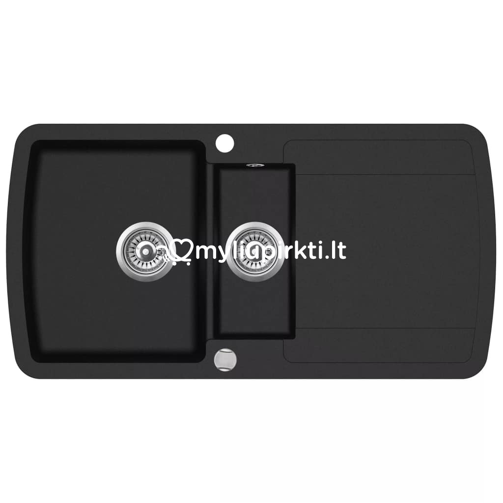
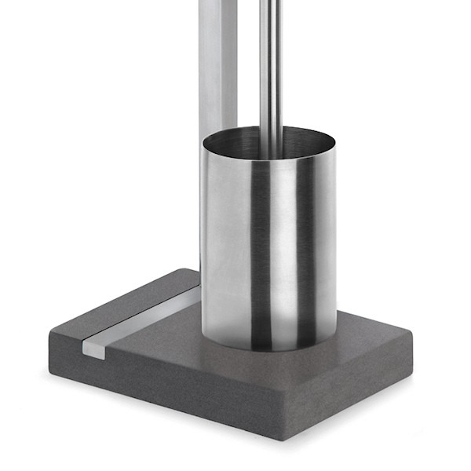
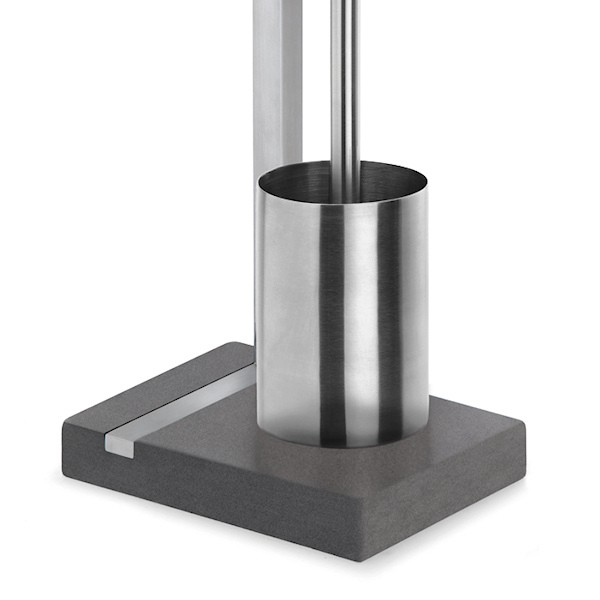

Tualeto dubenys | Santechnika |
2020.10.29 08:29

Ateityje naudodamiesi interneto svetaine bm.lv jūs sutinkate su slapukų naudojimo sąlygomis. Sužinokite daugiau čia..
Slapukų naudojimo sąlygos
Naudodamiesi bm.lv svetaine jūs sutinkate su šiomis naudojimo sąlygomis.
„TehEksperts Ltd“ imasi visų priemonių, kad užtikrintų maksimalų saugų svetainės naršymą ir apsaugotų kiekvieno vartotojo duomenis.
Lankytojai gali naudotis bm.lv svetainės skiltimis, neatskleisdami asmeninės informacijos, tačiau kai kurias mūsų interaktyvias paslaugas galime teikti tik po to, kai lankytojas bus identifikuotas.
BM.LV gali atskleisti jūsų asmeninę informaciją, kai to reikalauja teismo nutartis arba įstatymai.
„Bm.lv“ naudoja slapukus, kad užtikrintų lengvą ir visišką svetainės naršymą. Toliau naudodamiesi bm.lv jūs sutinkate su mūsų slapukų naudojimu.
Mes naudojame slapukus tam, kad:
- užtikrinti svetainės funkcionalumą;
- tinkinkite svetainės funkcionalumą pagal jūsų vartojimo įpročius - įskaitant kalbą, paieškos užklausas, anksčiau peržiūrėtą turinį;
- Gaukite statistiką apie puslapio lankomumą - lankytojų skaičių, laiką, praleistą puslapyje ir pan .;
- Pateikite reklamos informaciją, pritaikytą jūsų poreikiams.
Svetainės turinys, įskaitant grafiką, tekstą, duomenis, informaciją, dizainą, turinį ir vaizdinę informaciją, priklauso „TehEksperts Ltd.“. Draudžiama dauginti, dauginti, atgaminti, saugoti ar kitaip naudoti viešą ar komercinį tinklalapį ar jo dalis, išskyrus atvejus, kai yra gautas rašytinis SIA „TehEksperts“ sutikimas.
Svetainėje gali būti nuorodų į kitas svetaines. „TehEksperts Ltd“ neatsako už kitų svetainių, tiesiogiai nesusijusių su „TehEksperts Ltd.“, turinį.
„TehEksperts Ltd.“ neatsako už jokias išlaidas, nuostolius ar nuostolius (tiesioginius, netiesioginius, pasekminius, finansinius nuostolius ar negautą pelną), kilusius dėl jūsų prisijungimo prie interneto ar jo naudojimo.
ru lv en ee lt +371 672 967 34 +371 277 252 22 +371 672 967 34 +371 277 252 22 Krasta iela 89, Rīga ru lv en ee lt Prisijungimas Mano užsakymai PRODUKTŲ KATALOGAS Kompiuterinė įranga Mobilieji telefonai Tabletės Buitiniai prietaisai Santechnika Foto ir vaizdo įranga GoPro Laikrodžiai Televizijos, garso ir vaizdo įranga Žaidimų pultai ir žaidimai Automobilių prekės Namams ir sodui Sportas ir turizmas Vaikams ir kūdikiams Zoologijos sodo prekės Montblanc Juvelyriniai dirbiniai Kvepalai ir kosmetika Garantija Mokėjimas Pristatymas Kontaktai Garantija Mokėjimas Pristatymas Kontaktai 0 vnt. 0.00 € Kompiuterinė įranga Kompiuterių komponentai Perdirbėjai Pagrindinės plokštės RAM (RAM, SODIMM) Standieji diskai (HDD, SSD) Vaizdo plokštės Kompiuterių dėklai Maitinimo šaltiniai Garso plokštės Optiniai įrenginiai Tinklo kortelės Belaidžiai adapteriai Aušinimas Periferiniai įrenginiai Atminties kortelės Atminties kortelių skaitytuvai USB atmintinės Išorinės laikmenos Tinklo kameros Ausinės Klaviatūros Pelės ir pelės kilimėliai Mikrofonas Kalbininkai Laido laikikliai ir ausinių pagalvėlės Klaviatūros ir pelių priedai Grafinės planšetės UPS (nepertraukiamo maitinimo šaltiniai) Maršrutizatoriai Jungikliai Išorinis DVD+/-RW Kabeliai Vaizdo stebėjimas, IP kameros Programinė įranga Pratęsimai Adapteriai Priedai Kanceliarinės prekės Spausdintuvas Popieriaus smulkintuvai Skaitytuvai Biuro kėdės Kasetės ir toneriai Rašalinių spausdintuvų kasetės Nešiojamieji kompiuteriai ir jų priedai Užrašų knygelės Nešiojamųjų kompiuterių krepšiai Įkrovikliai, nešiojamųjų kompiuterių adapteriai Nešiojamųjų kompiuterių baterijos Nešiojamųjų kompiuterių aušintuvai Asmeniniai kompiuteriai Stacionarūs kompiuteriai Protingas namas Protingas namas Monitoriai ir jų priedai Monitoriai Monitorių laikikliai Dėl surišimo Dėl surišimo Mobilieji telefonai Telefonas Išmanieji laikrodžiai, apyrankės Ekrano apsaugos Kepurės Priedai Kiti priedai Laisvų rankų įranga Automobilio ir kiti laikikliai Įkrovikliai - maitinimo bankai Automobilių įkrovikliai Įkrovikliai, jungtys ir laidai Tabletės Tabletės Elektroninės knygos Ekrano apsaugos Kepurės Priedai Buitiniai prietaisai Didelė buitinė technika Skalbimo mašinos Drabužių džiovintuvai Indaploves Gaubtai Šaldytuvai Vyno spintelės Šaldikliai Krosnys Kaitlentės paviršiai Viryklės Smulki buitinė technika Daugia katilas Lygintuvai, lyginimo sistemos Mėsos mėsmalės Maisto kombainai Garo katilai Sulčių spaustuvai Virduliai Blenderis Smulkintuvai Dulkių siurbliai Langų plovikliai Garo valymo įranga Karcher aksesuarai Mikrobangų krosnelės Kavos aparatai Kavos malūnėlis Pieno trintuvas Maišytuvas Duonos krosnys Skrudinta duona Sumuštinis skrudinta duona Stalo grotelės Vaflių keptuvės Blynų keptuvės Šildymo stalčius Maisto džiovintuvai Vakuuminiai pakavimo įtaisai Siuvimo mašinos Šaldyklose Ledų aparatai Jogurto aparatai Popkorno aparatai Kiaušinių viryklės Vandens filtrai Priedai Dėl grožio ir sveikatos Epiliatorius Plaukų džiovintuvai Plaukų tiesintuvai Plaukų šukuosenos Plaukų suktukai Plaukų kirpimo mašinėlės ir kirpimo mašinėlės Vyriški skustuvai Elektriniai dantų šepetėliai Masažinė vonia Manikiūras / pedikiūras Veidrodžiai Veido priežiūra Pasverkite Priedai Klimato įranga Oro valytuvai Oro drėkintuvai Oro sausintuvai Oro kvapiosios medžiagos Elektriniai židiniai Šildytuvai Ventiliatoriai Kondicionieriai Mobilūs kondicionieriai Meteorologinės stotys Priedai Stalo indai ir virtuviniai indai Virtuvės indai Virtuvės aksesuarai Stalo įrankiai, peiliai Virtuvės svarstyklės THERMOS Indai Santechnika Kriauklės Vandens šildytuvai (katilai) Vandens siurbliai Radiatorius Maisto atliekų smulkintuvai Vandens maišytuvai (maišytuvai) Vandens maišytuvai (maišytuvai) Vandens maišytuvų priedai Rankšluosčių džiovintuvai Rankšluosčių džiovintuvai Priedai ir komponentai Dušo kabinos Dušo kabinos Dušo padėklai Dušo padėklo priekinis skydelis Dušo padėklo kojos Dušo padėklo sifonai Sifono reduktoriai Vonios Vonios Vonios kojos Vonios plokštės Vonios sienos Vonios reikmenys Vonios aksesuarai Rankšluosčių laikikliai Tualetinio popieriaus laikikliai Tualeto dubenys Laisvai stovintys tualetiniai dubenys Kabantys tualetiniai dubenys Tualeto sėdynės dangteliai Foto ir vaizdo įranga Optiniai keitikliai Droni Quadcopter Stabilizatoriai Atminties kortelės Foto-vaizdo įrangos krepšiai ir dėklai Nuotraukų filtrai Skaitmeniniai nuotraukų rėmeliai Nuotraukų albumai Vaizdo įrašymo įrenginiai Vaizdo juostos Radijo paleidimo įrenginiai ir imtuvai Pečių atramos (Rig) ir (Cage) Greitieji spausdintuvai Vaizdo įrašymo įrenginys Fotoaparatai Skaitmeniniai SLR Skaitmeniniai fotoaparatai Hibridiniai skaitmeniniai fotoaparatai Vidutinio formato kameros Kiirprintimiskaamerad Vaizdo kameros Vaizdo kameros Sporto kameros Medžioklės kameros Objektyvai ir priedai Objektyvai Objektyvų rinkiniai Saulės užuolaidos Apsauginiai lęšių dangteliai Optiniai prietaisai Žiūronai Lauko ir apžvalgos okuliarai Teleskopai Mikroskopai Lazeriniai tolimačiai Naktiniai budėjimai Trikojai Trikojai Trikojo galvutės Trikojo priedai Blyksniai Blyksniai Flash priedai Studijų įranga Studijų komplektai Studijos apšvietimas Minkšta dėžutė Foto skėčiai Studijų aksesuarai Monitoriai Apšvietimo stovai Atšvaitai Objektų nuotraukų lentelės Temos nuotraukų palapinės Nuotraukų fonai Fono laikikliai ir sistemos Foto-vaizdo įrangos priedai Baterijos Įkrovikliai Foto technikos priežiūros produktai Konsolė Mikrofonas Adapteriai Ekspozicijos matuokliai Povandeniniai korpusai Fotografiniai filmai Ekrano apsaugos Vaizdo ieškikliai Kiti priedai GoPro Fotoaparatai Dronai Stabilizavimas Laikikliai ir priedai Laikrodžiai Laikrodžiai Laikrodžio dirželiai Priedai Televizijos, garso ir vaizdo įranga Televizoriai Projektorius Televizorių ir projektorių priedai Tvirtinimo detalės Jungiamieji laidai Ekranai projektoriams Kiti Multimedijos grotuvai Garso aparatūra, HiFi Muzikos centrai Belaidės akustinės sistemos, stotelės AV imtuvai, stiprintuvai Akustinės sistemos (kolonėlės) Nešiojamoji akustika Ausinės Magnetol, radijas CD ir tinklo garso grotuvai Diktofonai Garso juostos Namų teatrai Disko grotuvai BluRay / DVD grotuvai Priedai Studijų įranga Montavimo maišytuvai Disko grotuvai / kasetės DJ ausinės DJ Mixer konsolė DJ apšvietimas DJ sąsaja Ausinių stiprintuvai Mikrofonas Akustinės sistemos (kolonėlės) Žaidėjai Specialieji efektai Priedai Žaidimų pultai ir žaidimai Žaidimų pultai Žaidimai Suvenyrai Žaidimų aksesuarai PlayStation priedai Xbox priedai Nintendo aksesuarai PC priedai Universalūs priedai Automobilių prekės GPS navigacijos įranga Pramoninė ir automobilių chemija Automobilių chemija Dviračių laikikliai Stogo turėklai ir lentynos Priedai Garso sistemos Kalbininkai Garso / vaizdo aparatūra Galios stiprintuvai Žemų dažnių garsiakalbiai Garsiakalbių adapteriai Priedai Automobilių Dalys Pneumatinės pakabos pagalvėlės Pneumatinės pakabos kompresoriai Kiti Namams ir sodui Valymo įranga Buitinė chemija Elektrinis įrankis remontui Gręžtuvai, perforatoriai Matavimo prietaisai, lazeriai Kampinis šlifuoklis Daugiafunkciniai įrankiai Šlifavimo staklės Atsuktuvai Frezavimo staklės Pneumatiniai įrankiai Diskiniai pjūklai Kardo ašmenys Dėlionės Lėktuvai Plaukų džiovintuvai Dremel Priedai Sodo ir miško technika Aukšto slėgio plovyklos Vejapjovės Vejapjovių robotai Sodo traktoriai Žoliapjovė Benzininiai grandininiai pjūklai Elektriniai grandininiai pjūklai Akumuliatoriniai pjūklai Pjūklų grandinės ir bėgeliai Krūmapjovės Lapų pūstuvai Laistymo įranga Vandens siurbliai Aeratoriai Žemės pjaustytuvai Laiptai ir pastoliai Kompresoriai Smulkintuvai Aliejai Priedai Poilsiui namuose ir sode Grotelės Pledai Priedai Apšvietimas LED lemputės Prožektoriai Elektriniai lizdai Dekoratyvinės lempos Namų saugumas Saugu Durų varpai Sodo rankiniai įrankiai Kastuvai Šakės Sodo žirklės Rankiniai remonto įrankiai Įrankių rinkiniai Rankiniai įrankiai Darbo drabužiai ir avalynė Veido kaukės Pirštinės Kelnės Darbo striukės ir liemenės Sportas ir turizmas Treniruokliai Metalo detektoriai Priedai SUP lentos ir priedai SUP lentos Priedai Valtys ir aksesuarai Baidarė Guminės valtys Priedai Žvejyba Žuvų ieškikliai Dviračiai Dviračiai Priedai Motoroleriai, balansavimo lentos Motoroleriai, balansavimo lentos Priedai Vaikams ir kūdikiams Žaislai LEGO Bruder Funko Hasbro Sauskelnės Stalo žaidimai Neįgaliųjų vežimėlis Dviračiai, motoroleriai Vaikiškos automobilinės kėdutės Stebėjimas (radijo kameros, fotoaparatai) Laikrodžiai Kūdikio maitinimas Galios kėdės Maitinimo buteliai Pieno pompos Zoologijos sodo prekės Grožio reikmenys Smėlis ir patalynė Montblanc Krepšiai, dėklai ir piniginės Laikrodžiai Rašikliai Kvepalai Diržai Papuošalai Rankogalių segtukai Akiniai Rinkiniai Kiti Juvelyriniai dirbiniai Išskirtinės dovanos Papuošalai su deimantais Auksiniai papuošalai Auksiniai žiedai Auksiniai auskarai Auksinės grandinėlės Auksinis pakabukas Sagės Auskarai Kolekcija Kvepalai ir kosmetika Vyriški kvepalai Šampūnai Kūno losjonai Plaukų formavimas DezinfekavimasTualeto dubenys
Laisvai stovintys tualetiniai dubenys (9) Kabantys tualetiniai dubenys (22) Tualeto sėdynės dangteliai (8)Svarbu
Aptarnavimo centrai Garantija Mokėjimas Pristatymas Naudojimo sąlygos Privatumo politika KontaktaiKontaktiniai duomenys
Tel. +371 67296734
Mob. +371 27725222
Fax. +371 67296798
Krasta 89, LV-1019
Rīga, Latvija
skype: www.bm.lv
email: info@bm.lv
Rekvizitai
Pavadinimas SIA TehEksperts Registracijos numeris 41503080333 PVM numeris LV41503080333 Parduotuvės adresas Krasta iela 89, Rīga, LV-1019 Teisinis adresas Krasta iela 89, Rīga, LV-1019 Banko pavadinimas AS Swedbank Banko sąskaita LV35HABA0551044594652 Banko SWIFT HABALV22 © 2020 All Rights Reserved.www.bm.market
- Dubenys | C&D Style
- Dubenys, dubenėliai | Gerduva.lt
- Kiek tualeto dubenys sveria? - Įranga 2019
- Kaip valyti tualeto dubenį iš akmens
- 11 geriausių tualeto dubenys - Reitingas 2019
- Tualeto dubuo | designremont.club
- Tualeto dubenų valymas - Panelių Gyvenimas - 2020
- Geriausių tualeto dubenių įvertinimas pagal vartotojų ...
- Juodos tualeto dubenys: modernios dizaino tendencijos ...
- 10 geriausių tualeto dubenys Roca - Reitingas 2019
- Dubenys | C&D Style
Geriausių tualeto dubenių įvertinimas pagal vartotojų atsiliepimus. Remontas Ir Nekilnojamasis Turtas May 3, 2018 be tualeto dabar negali padaryti jokios vieną butą.Iš pradžių gali atrodyti, kad šis objektas gali tarnauti amžinai. Bet iš tikrųjų, laikui bėgant tualetas nebeatitinka estetinius reikalavimus.
- Dubenys, dubenėliai | Gerduva.lt
Tualeto dubenys, pagamintos iš dirbtinio ir natūralaus akmens, taip pat stiklo, priklauso prabangos prekėms. Jie turi didelę kainą, tačiau jie turi gražų dizainą ir puikiai tinka interjere Art Nouveau stiliaus. Dirbtinis akmuo ir stiklas yra mažai stiprus, tačiau gaminant tualetinius dubenis šioms medžiagoms pridedami specialūs ...
- Kiek tualeto dubenys sveria? - Įranga 2019
Tualeto indų valymo žingsniai. Išskyrus tuos atvejus, kai tualeto dubenyje yra gilūs ir tamsūs žiedai, valymo tualeto dubenys gali būti greitai ir lengvai. Atlikite šiuos veiksmus, jei norite išvalyti tualetinį indą: Atidarykite langus ir uždėkite apsaugines gumines arba lateksines pirštines. Pasukite tualeto dangtį ir sėdynę.
- Kaip valyti tualeto dubenį iš akmens
Dubenys, dubenėliai Rūšiuoti pagal Pozicija Pavadinimas Kaina Prekės ženklas Rūšiuoti pagal Nustatyti mažėjimo tvarka Rodyti
- 11 geriausių tualeto dubenys - Reitingas 2019
Slapukų naudojimo sąlygos. Naudodamiesi bm.lv svetaine jūs sutinkate su šiomis naudojimo sąlygomis. „TehEksperts Ltd“ imasi visų priemonių, kad užtikrintų maksimalų saugų svetainės naršymą ir apsaugotų kiekvieno vartotojo duomenis.
- Tualeto dubuo | designremont.club
Puodeliai Lėkštės, lėkštutės Dubenys, dubenėliai. Emaliuoti indai Bambukiniai indai Indai serviravimui Indai maistui laikyti Stoveliai virtuvei Indai gėrimams. Stikliniai indai su kraneliu Grafinai, ąsočiai, buteliai Stiklinės, taurės, šiaudeliai. ... Keičiama tualeto šepečio galvutė Metia
- Tualeto dubenų valymas - Panelių Gyvenimas - 2020
Originalaus dizaino dubenys stalo serviravimui. Užeikite į C&D Style internetinę parduotuvę ir įsigykite Jums patinkančius indus.
- Geriausių tualeto dubenių įvertinimas pagal vartotojų ...
Tualeto paaukštinimai mažiausia kaina internetu. Paskubėk, dabar geriausias laikas pirkti...
- Juodos tualeto dubenys: modernios dizaino tendencijos ...
Roca tualetas, kuriam geriau pasirinkti ir pirkti. Pakabinami ir montuojami modeliai „The Gap“, „Dama Senso“, Viktorija, Debba. Geriausi tualetai Roca 2018 - įvertinimas.
- 10 geriausių tualeto dubenys Roca - Reitingas 2019
Juodos tualeto dubenys: modernios dizaino tendencijos Juodasis tualetas ilgai laikomas labai neįprasta tirpalo tualeto interjere, nes jis neatitiko tradicinės santechnikos pasirinkimo sampratos. Tačiau laikui bėgant mados ir įvairių interjero stilių tokia santechnika labai aktualu.
Geriausių tualeto dubenių įvertinimas pagal vartotojų atsiliepimus. Remontas Ir Nekilnojamasis Turtas May 3, 2018 be tualeto dabar negali padaryti jokios vieną butą.Iš pradžių gali atrodyti, kad šis objektas gali tarnauti amžinai. Bet iš tikrųjų, laikui bėgant tualetas nebeatitinka estetinius reikalavimus.
Tualeto dubenys, pagamintos iš dirbtinio ir natūralaus akmens, taip pat stiklo, priklauso prabangos prekėms. Jie turi didelę kainą, tačiau jie turi gražų dizainą ir puikiai tinka interjere Art Nouveau stiliaus. Dirbtinis akmuo ir stiklas yra mažai stiprus, tačiau gaminant tualetinius dubenis šioms medžiagoms pridedami specialūs ...
Tualeto indų valymo žingsniai. Išskyrus tuos atvejus, kai tualeto dubenyje yra gilūs ir tamsūs žiedai, valymo tualeto dubenys gali būti greitai ir lengvai. Atlikite šiuos veiksmus, jei norite išvalyti tualetinį indą: Atidarykite langus ir uždėkite apsaugines gumines arba lateksines pirštines. Pasukite tualeto dangtį ir sėdynę.
Dubenys, dubenėliai Rūšiuoti pagal Pozicija Pavadinimas Kaina Prekės ženklas Rūšiuoti pagal Nustatyti mažėjimo tvarka Rodyti
Slapukų naudojimo sąlygos. Naudodamiesi bm.lv svetaine jūs sutinkate su šiomis naudojimo sąlygomis. „TehEksperts Ltd“ imasi visų priemonių, kad užtikrintų maksimalų saugų svetainės naršymą ir apsaugotų kiekvieno vartotojo duomenis.
Puodeliai Lėkštės, lėkštutės Dubenys, dubenėliai. Emaliuoti indai Bambukiniai indai Indai serviravimui Indai maistui laikyti Stoveliai virtuvei Indai gėrimams. Stikliniai indai su kraneliu Grafinai, ąsočiai, buteliai Stiklinės, taurės, šiaudeliai. ... Keičiama tualeto šepečio galvutė Metia
Originalaus dizaino dubenys stalo serviravimui. Užeikite į C&D Style internetinę parduotuvę ir įsigykite Jums patinkančius indus.
Tualeto paaukštinimai mažiausia kaina internetu. Paskubėk, dabar geriausias laikas pirkti...
Roca tualetas, kuriam geriau pasirinkti ir pirkti. Pakabinami ir montuojami modeliai „The Gap“, „Dama Senso“, Viktorija, Debba. Geriausi tualetai Roca 2018 - įvertinimas.
Juodos tualeto dubenys: modernios dizaino tendencijos Juodasis tualetas ilgai laikomas labai neįprasta tirpalo tualeto interjere, nes jis neatitiko tradicinės santechnikos pasirinkimo sampratos. Tačiau laikui bėgant mados ir įvairių interjero stilių tokia santechnika labai aktualu.

 
